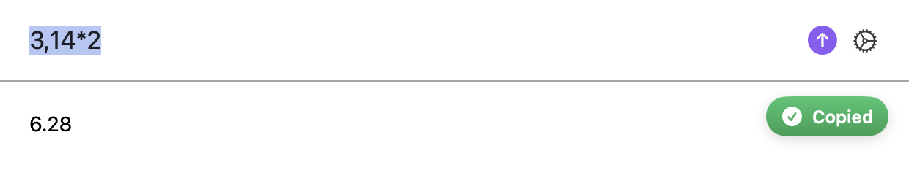
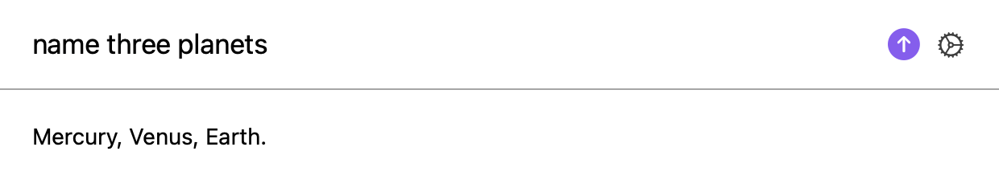
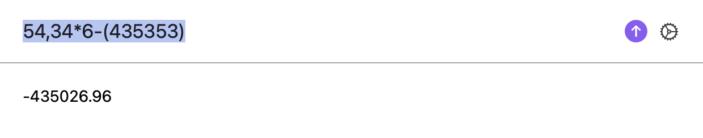
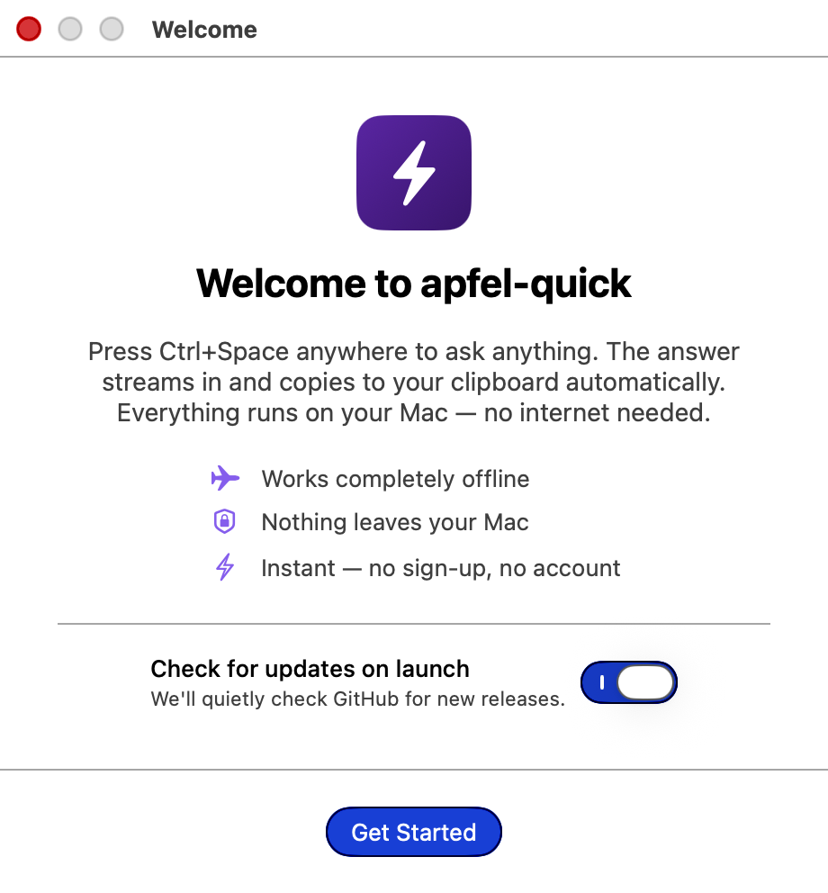
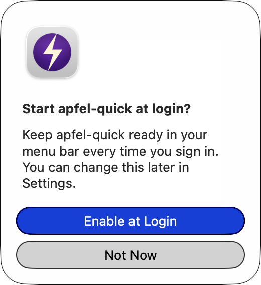
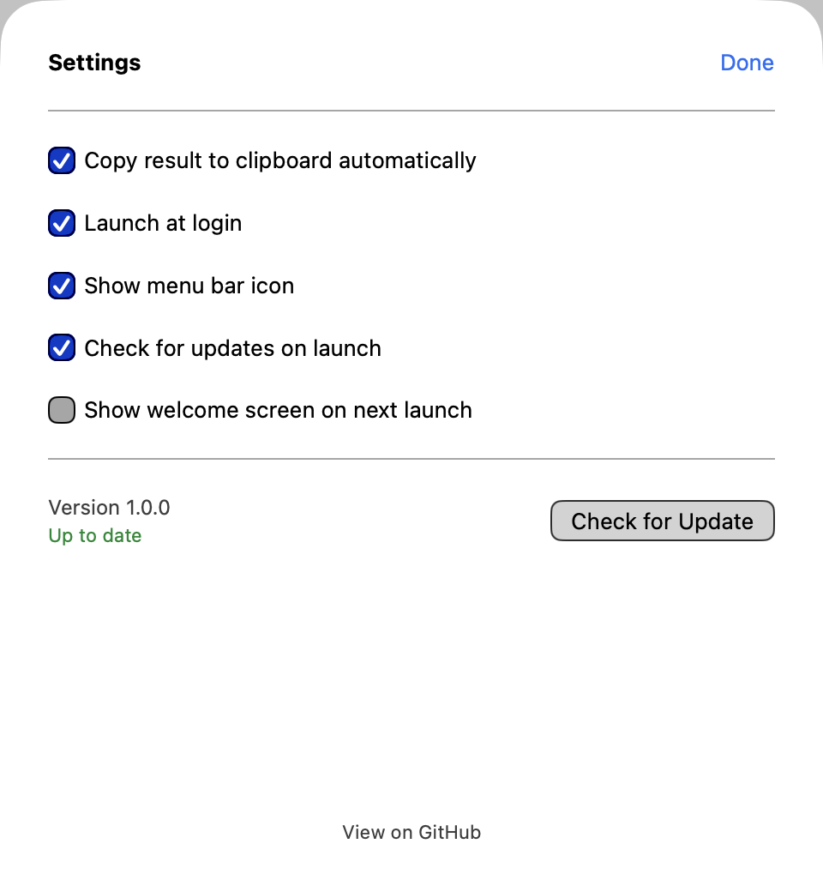

A Spotlight-style AI overlay for your Mac. Hit Ctrl + Space, type your question, press Enter. The answer streams in and copies to your clipboard automatically. Runs entirely on-device. No API keys. No account. No data ever leaves your machine.

ChatGPT, Claude, Gemini, and Mistral all need servers, accounts, and an internet connection. apfel-quick runs entirely on your Mac. No Wi-Fi, no sign-up, no monthly bill.
| apfel-quick | ChatGPT | Claude | Gemini | Mistral | |
|---|---|---|---|---|---|
| Global hotkey overlay | ✓ | ✗ | ✗ | ✗ | ✗ |
| Works offline | ✓ | ✗ | ✗ | ✗ | ✗ |
| Auto-copies answer to clipboard | ✓ | ✗ | ✗ | ✗ | ✗ |
| Cost | Free | Free / $20+/mo | Free / $20+/mo | Free / $20+/mo | Free / $15+/mo |
| Data stays on your Mac | ✓ | ✗ | ✗ | ✗ | ✗ |
| No account or sign-up | ✓ | ✗ | ✗ | ✗ | ✗ |
| No API key needed | ✓ | ✗ | ✗ | ✗ | ✗ |
| Local math calculator | ✓ | ✗ | ✗ | ✗ | ✗ |
ChatGPT, Claude, Gemini, and Mistral are powerful cloud services, but each one needs an internet connection, an account, and your conversations travel to remote servers. apfel-quick is the alternative for when speed, privacy, and offline availability matter.
No apps to launch. No windows to find. Just a hotkey and a text field, anywhere on your Mac.
A small input appears centered on your screen. Works over any app, even fullscreen. The hotkey is configurable in Settings.
Any question. Translations, quick facts, rephrasings, code snippets, math. The input auto-focuses so you can just start typing.
Tokens arrive below the input. When it's done, the full answer is on your clipboard. A green Copied badge confirms it.
apfel-quick uses Apple's on-device language model. You need all three.
Required for Apple Intelligence. Apple menu > System Settings > Software Update.
Apple Intelligence runs on-chip only. Apple menu > About This Mac must say M1, M2, M3, or M4.
Enable in System Settings > Apple Intelligence & Siri. Works in English, German, French, Spanish, Italian, Japanese, Korean, Chinese, and more.
brew install Arthur-Ficial/tap/apfel
Free. Signed and notarised by Apple. Apple Silicon only.
Download the zip, unzip, drag apfel-quick.app to your Applications folder, and open it. On first launch a short welcome screen walks you through the hotkey and settings.
Download free (arm64)Signed and notarised by Apple. SHA-256 checksums in each release.
You can reopen the welcome screen anytime from Settings → Show welcome screen on next launch, or right-click the menu-bar bolt → Show Welcome Again.
brew install Arthur-Ficial/tap/apfel-quick
Best for developers. Updates with brew upgrade apfel-quick.
git clone https://github.com/Arthur-Ficial/apfel-quick.git cd apfel-quick swift build -c release make install
Requires Xcode command-line tools and apfel on PATH.
github.com/Arthur-Ficial/ apfel-quick/releases
Every release has SHA-256 checksums and release notes. Subscribe via GitHub.
Built for people who want an answer right now without opening a browser, logging in, or thinking about tokens.
Default Ctrl+Space, configurable. Works over any app, any space, even fullscreen.
Responses stream in as the model generates them. No waiting for a complete response to appear.
When the stream completes, the full answer is on your clipboard. A green Copied badge flashes in the corner so you know.
Expressions like 54,34*6-(435353) are detected and computed locally by a recursive-descent parser. Never touches the AI. Scientifically correct.
Tight system prompt. No preamble, no postamble, no "as an AI" disclaimers. Just the answer you asked for.
Starts with your Mac if you let it. Click the bolt icon to open, right-click for Settings, Show Welcome Again, and Quit.
No API keys, no network calls, no telemetry. Powered by apfel and Apple Intelligence.
176 tests, TDD-first. Built in Swift 6.3, SwiftUI, zero external dependencies. Read the code, fork it, ship it.
Silent update check on launch. Every release is signed, notarised, and SHA-256 verified. Homebrew upgrades in one command.
Most AI overlays send every query — including 1+1 — to the model. apfel-quick detects pure math expressions and computes them locally with a recursive-descent parser. Microseconds. Scientifically correct. Supports European decimal commas.
All of these are computed locally without ever touching the AI:
54,34*6-(435353)
→
-435026.96
sqrt(2) * pi
→
4.442882938
sin(0) + cos(0)
→
1
2^10
→
1024
Supports: + − × ÷ ^ %, parentheses, unary minus, European decimal commas (3,14), and functions: sqrt, sin, cos, tan, log, ln, abs, floor, ceil, round, plus constants pi and e.
apfel-quick is a native macOS overlay built on top of apfel, an open-source CLI and OpenAI-compatible server that wraps Apple's on-device foundation model. apfel does the AI inference. apfel-quick handles the hotkey, overlay UI, streaming, auto-copy, and math shortcut on top of it.
apfel.franzai.com. The AI engine behind apfel-quick. Also available standalone as a UNIX CLI and OpenAI-compatible API server. If you want a full chat UI instead of a one-shot overlay, try apfel-chat.
Every screenshot below is the actual app. Captured with the macOS window API so the window is the only thing you see — no desktop, no other apps.
Press the hotkey, the text field auto-focuses. Type your question. A purple send button and a gear icon sit on the right.
A tight system prompt keeps answers short and on-topic. No "As an AI language model" — just the result you asked for.

European decimal commas, operator precedence, parentheses — all parsed and computed locally. The green Copied badge floats in the corner and fades out on its own.
Recursive-descent parser with proper precedence. The earlier math example 54,34*6-(435353) resolves to -435026.96 in under a millisecond.

One dialog on first launch. Explains the hotkey, shows the feature bullets, and lets you toggle update checks before you see the overlay.

Right after the welcome, a small confirmation asks whether to start apfel-quick at login. Change it anytime in Settings.

Auto-copy, launch at login, menu bar icon, update checks, show welcome on next launch. Plus the current version and a Check for Update button.

MIT-licensed. 176 tests, TDD-first. Swift 6.3, SwiftUI, zero external dependencies. Use it, fork it, ship it. Bug reports and pull requests welcome.